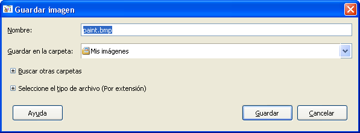

Recrear sitio web con la estructura que se muestra. Cada página tendrá una barra de "navegación" donde hay enlaces a cada uno de los restantes documentos html, pdf y png.
Adicionalemente tendremos en la página index.html:
clases@xdebian11:~/ejercicio$ tree -n . ├── docs │ └── apuntes.pdf ├── figuras │ └── esquema.png ├── index.html ├── nivel1 │ ├── nivel11 │ │ └── nivel11.html │ └── nivel1.html └── nivel2 ├── nivel21 │ ├── nivel211 │ │ └── nivel211.html │ └── nivel21.html └── nivel2.html 7 directories, 8 files clases@xdebian11:~/ejercicio$